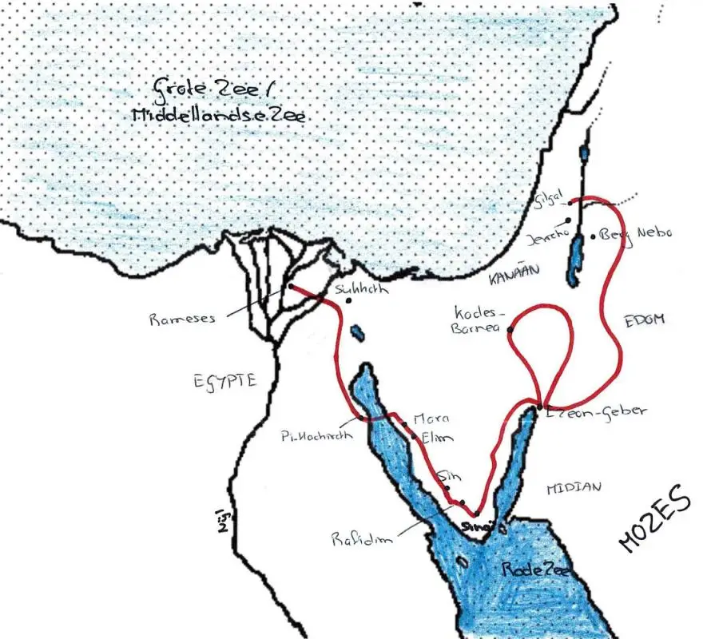

Wat zijn abrahamistische religies
De abrahamitische religies vormen een aantal verwante, monotheïstische godsdiensten, deze religies zijn het jodendom, het christendom en de islam doordat deze religies een godsdientwetenschap hebben die veel op elkaar lijkt wordt er onderscheidt gemaakt tussen de abrahamistische godsdiensten en de twee ander twee religieuze hoofd tradities de naam abrahamistische is afgeleid van de aarts- of stamvader van de joden christenen en moslims en enkele kleinere abrahamistische stromingen.
Historische en theologische oorsprongen
Historisch
Wetenschappelijk-historisch gezien, vindt de abrahamistische traditie haar oorsprong in de bronstijd van de Levant. Omstreeks de 14 eeuw voor christus maken de tot dan toe nog polytheÏstische , Semitsche stammen (specifiek de israëlieten) een proces door van verregaande monotheïsering. Uitgaan gaan ze de godheid Yahweh, tot dan toe slechts een van de vele goden binnen de bredere Kanaänitische mythologie, als hun stamgod beschouwen. Later wordt Yahweh als unisersele enige god aanbeden. dit proces vormde de basis van de vroegst gedocumenteerde abrahamistische religie, het jodendom. het christendom en de islam zijn elk afsplitsingen en herinrepretaties van van dit concept van een universele god
theologische
De drie monotheïstische hoofdstromingen beschikken elk over een eigen thoelogische theorieën, vanwaaruit zij hun oorsprong verklaren, en hun positie ten opzichte van andere godsdiensten bepalen.
het Jodendom
Joden geloven dat god een verbond met drie personen heeft gesloten dit zijn Abraham, zijn zoon Isaak en zijn kleinzoon Jakob die later ook wel isreal wordt genoemd van deze drie wordt Abraham als stamvader van de israëlieten gezien. in het verbond staat dat god het land kanaän aan de israëlieten schenkt later wordt door mozes de belangerijkste joodse profeet mozes tijdens de exodus uit Egypte een aantal wetten aan dit verbond toegevoegd deze wetten heten de tien geboden. volgens de joodse traditie zijn er in totaal zeshonderddertien geboden waarvan er zeshonderdelf door mozes, en 2 direct via god zouden zij geopenbaard. het jodendom is een ethnoreligie dit betekent dat de joden geloven dat ze allemaal af stammen van de de drie aartsvaders dit zijn Abraham Isaäk en Jakob.
het Christendom
Christenen geloven dat Jezus de zoon van God is en tevens de messias die voorspeld werd in het Oude Testament, die naar de wereld werd gezonden om de mensheid te bevrijden van de zonde. In de christelijke traditie wordt ieder mens zondig geboren en is het geloof in Jezus en zijn leer, beschreven in het Nieuwe Testament, de enige manier om tot God te kunnen komen. Christenen beschouwen het joodse geloof als door God gegeven, maar incompleet voorzover Jezus daarin als de messias wordt afgewezen. De islam wordt gezien als een compleet andere godsdienst.
de Islam
Moslims geloven dat de islam de definitieve openbaring is van de God van Abraham via de profeet Mohammed. Deze zien zij als de laatste profeet, en de voltooier van de abrahamitische religies. Tussen de abrahamitische profeten en Mohammed wordt religieus gezien geen onderscheid gemaakt. Voor Moslims is de Koran het letterlijke woord van God, dat door de aartsengel Gabriël gedurende drieëntwintig jaar aan Mohammed is geopenbaard. Eerdere profeten en ook Jezus hebben een incomplete, tijds- en volksgebonden boodschap verkondigd en daarom zijn de andere abrahamitische religies onvolmaakte vormen van de islam.